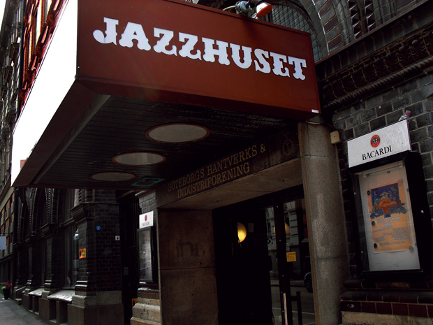

Rubrik
Jazzhuset är en jättepopulär korg i centrala Göteborg. När den öppnade år 1977 var det bara jazzmusik som spelades men nu spelar DJ's och andra akter där också. Den bommar igen nu i maj. Den sista helgen är 5-6 maj 2017.
Här kan du läsa om ställen Håkan sjunger om i sina låttexter.

Jazzhuset är en jättepopulär korg i centrala Göteborg. När den öppnade år 1977 var det bara jazzmusik som spelades men nu spelar DJ's och andra akter där också. Den bommar igen nu i maj. Den sista helgen är 5-6 maj 2017.